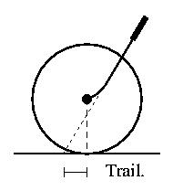

The steering system of the bicycle is an amazing invention. Every beginning cyclist goes through a frustrating period when they learn how to stay upright and steer. Every cyclist who has passed this learning period can simply jump on a bicycle and ride it without giving the matter much thought. This is because the steering system is designed to provide input which helps to keep the bike and rider upright. It is a simple, elegant system which has been around since the days of the high-wheeler. Although a bicycle rider certainly doesn't have to know how it works in order to appreciate it, it also provides an interesting puzzle in mechanics. There is quite a bit of depth to the problem, with books, articles, and graduate theses about the subject, and ongoing debates with both clueful and clueless participants. There are still aspects which seem to confuse everybody who has anything to say about them. This article aims to present some of the basics.
The ability to steer is necessary to keep a bicycle moving under any circumstances, including riding in a straight line. Anyone who has ridden a bike for a while knows that when the front wheel is prohibited from turning, such as when it is stuck in a streetcar track, the bike must either immediately stop or crash. This is because a bicycle is a single track vehicle, with inline wheels and the ability to lean. Often, the rider's center of gravity is to the right or left of the wheels. When this happens, the bike must be repositioned so that the wheels are below the rider's center of gravity.
To do this, the rider uses inertia and the steering system to avoid falling over. When the bicycle starts to lean, the handlebars are turned in the direction of the lean, and the bicycle is pulled in that direction as well. Since inertia causes the rider to continue moving straight, the rider is levered back over the bicycle's wheels, at which point the bicycle is upright again. This will continue to create another lean to the opposite side, as well as a slight change in direction, both of which must be corrected again.
These small adjustments and readjustments will continue as long as the bicycle is being ridden. It is a beautiful act of dynamic stability, with a heavy rider balancing on a light pole by constantly falling.
When the bicycle is moving fast, the rider has more momentum, and inertia will exert a greater pull on the bicycle. This is why there is less sideways wheel movement at high speeds, and why a bicycle is more stable and easier to ride then. At low speeds, the smaller momentum of the rider requires that the front wheel must be moved farther to the right and left to keep everything supported.
The fact that a bicycle is a single track vehicle also governs how it turns. A bicycle doesn't provide lateral support. It only stays up when its frame is in line with all of the forces which are accelerating the rider - gravity and inertia. For a given turn radius (determined by the handlebar angle) and velocity, there is a single lean angle where the bicycle frame is parallel to the direction of the force exerted by the rider's body. The bicycle can move forever at this angle, lean, and velocity. If the lean is too large, the cycle will lowside and dump the rider on the inside of the turn. If the lean is too small, the cycle will highside, and catapult the rider to the outside of the turn.
Because of this, a bicycle cannot simply be jerked into whatever turn the rider wants to make, but must be leaned as well. In order to turn quickly, the bicycle must be leaned quickly. To do this, a rider can use the steering movements mentioned above to make a forced turn. Turning the handlebars sharply in one direction will cause the bicycle to move in that direction. As momentum carries the rider forward (the start of a highside), the cycle will be yanked by the rider into a lean in the other direction. The handlebars are then quickly moved to the proper angle for the lean that has been produced (which stops the highside), causing the desired turn.
Nothing that has been said so far is dependent on steering geometry for it to work, at least in principle. The geometry of the bicycle serves to alter its handling, or the way that it responds to rider input.

The most important factor in handling is trail, which can be thought of as the extent to which the front wheel of a bicycle follows its steering axis. It is the result of a combination of a few aspects of steering geometry, and some engineers prefer to address those aspects directly and not deal with trail, but it is easy to visualize. To measure the trail of a bicycle, draw an imaginary line that extends through the steering axis (i.e. through the length of the headtube). Ignore the fork. Draw another line that passes through the front axle and is perpendicular to the ground. It will touch the ground at the center of the front tire's contact patch. The distance between the two points where these lines touch the ground is the trail of the bicycle. If all the other factors are kept the same, slackening the headtube angle or enlarging the wheel will increase the trail, and extending the rake of the fork will decrease the trail (I use the term rake to mean the forward extension of the fork at the tips, which is sometimes achieved with an angle between a straight-bladed fork and the steertube. This might not be the proper term, but it's what most bicycle engineers use).
A bicycle wheel, with its positive trail, acts as a caster. The front wheels of a shopping cart have casters, too, but they use a vertical steering angle and a backwards rake. Pushing a cart pushes the front steertubes forward, and the wheels trail behind. The same is true for a bicycle. A bicycle can be easily pushed forward without touching the handlebars. Pushing it backwards is impossible, however, because the fork will want to spin around and turn the negative trail into a positive trail.
The trail of a bicycle makes it easier to ride because it links the lean angle of the frame with the turning angle of the fork. Leaning the bike causes the fork to turn in that direction, because the frame is lower after the fork has turned. For each lean angle, there is a corresponding steering angle where the frame is lowest, and the fork will want to turn towards that angle while that lean is occuring. This can be seen by raising the rear wheel of a of a bicycle, which makes the headtube angle more upright and reduces the trail. By resting the rear wheel on a pile of books of increasing height, the turn will be seen to decrease for a particular lean.
A bicycle is said to be stable when it has a strong correcting tendency in its steering. Imagine a moving bicycle that has its front wheel knocked sideways by a rock or chuckhole, so that it is suddenly turning. If the bicycle has no trail, there will be no steering correction. A rider who does not think quickly and manually steer the bike will continue to move forward as the bike turns, and will get dumped on the road when the bike no longer provides any support. Now consider a bicycle with trail. As the rider continues forward and the bike turns, it will be pulled into a lean. The front wheel will turn by itself in the direction that the rider is moving, and the bicycle will position itself under the rider. This effect can be demonstrated while riding by quickly swerving to avoid a mark on the road directly ahead of the front wheel. The wheel will move to the side of the mark, but will instantly move back to point in almost the same direction as was originally being traveled.
Note that a more stable bike will help the rider stay upright, but cannot be steered with as much precision. One reason track bicycles have less trail is because they are made for a precise ride rather than an easy one. A racer would rather have greater control and take responsibility for keeping the bike upright. This is especially important when the rider is out of the saddle and pushing hard on the pedals. At this time, the bike is being flipped rapidly from side to side, and if it has a large trail, it will wobble as it does so because the front wheel will turn with the lean.
There are other factors besides trail which affect a bicycle's steering.
Many people assume that the gyroscopic action of the front wheel is solely responsible for keeping a bicycle upright. In fact, its effect is minor. Gyroscopic stability is what keeps a rolling hoop from falling. One can demonstrate the gyroscopic forces on a bicycle wheel by holding a detached, still wheel by the ends of its axle. Tilt the axle up and down, without letting it twist left or right. In other words, put one hand higher than the other without letting either hand move forwards or back. Then spin the wheel forward, and tilt it again. When the axle is tilted so that the left side is down, it will twist left, and when it is tilted with the right side down, it will twist right. This is exactly how we want the wheel to move when we ride a bike, and is similar to the effects of trail.
So why do we say that this doesn't really affect bicycle handling? David Jones explored this when he tried to make an unridable bicycle. His first attempt, the URB Mark 1, negated the gyroscopic action of the front wheel by mounting another wheel on the same axle and spinning it in the opposite direction. He says that it felt strange, but was easily ridable. However, when set in motion without a rider, it collapsed much quicker than normal, and he found it difficult (although not impossible) to ride with his hands off of the handlebars.
Another element to consider is the wheelbase of the bicycle. As the bicycle turns, the steering axis is pulled to the side, and the rest of the frame will twist on the rear wheel's contact patch. The longer the wheelbase, the less the frame will turn with a given sideways movement of the steering axis. Thus, a short wheelbase tends to turn quicker, while a long wheelbase takes a more severe turn to produce the same effect on the bike's frame.
The rider's position on the bicycle is also important. A higher bottom bracket will cause it to handle differently when leaning from one side to the other, since the rider's weight will have to be moved farther on a longer lever. Putting the rider farther back will unweight the front wheel, which greatly affects its ability to grab the pavement and pivot the bike.
Whitt, Frank Rowland David Gordon Wilson, Bicycling Science (Cambridge, Mass.: The MIT Press, 1994): 215-238. The first stop for any mechanical or biomechanical question. Provides an excellent summary of many subjects, sometimes terse to the point of confusion, however. Read a chapter of interest and then read all of the references.
Jones, David E.H., "The Stability of the Bicycle", Physics Today (April 1970): 34-40. A fun exploration of handling; an amateur science project conducted by a professional chemist. The saga of many attempts to create an unridable bicycle.
Banten, D. and C. Miller, "The Geometry of Handling", Bicycling (Emmaus, Pa., July 1980): 97-106. Van der Plas, Rob, Bicycle Technology (San Franciso: Bicycle Books, 1991): 75-79. A good all around book for learning about bicycle components.
(Return to C.H.U.N.K. Technical Documentation)
| Copyright 2003 Megulon Five <megulon5@dclxvi.org>. |
|
This work is licensed under a Creative Commons License. | Last modified 12 September 1999. |